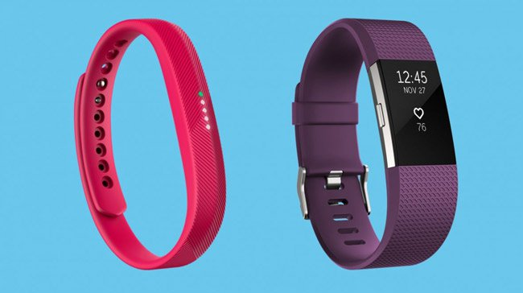
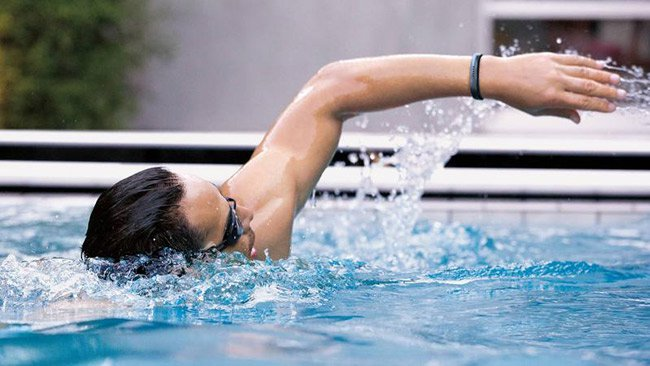
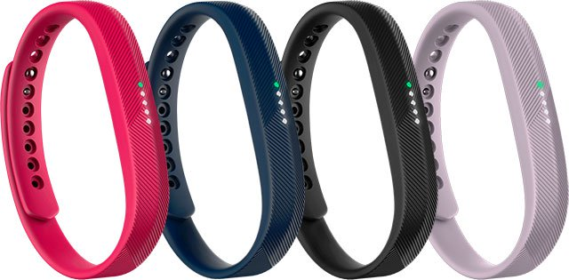
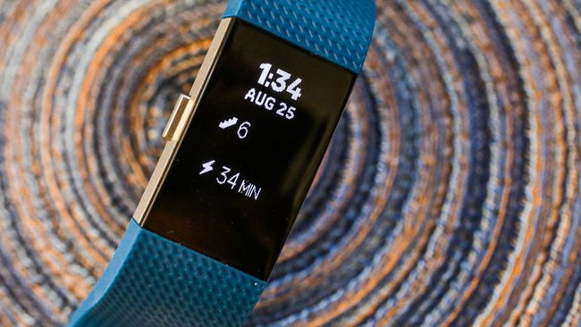
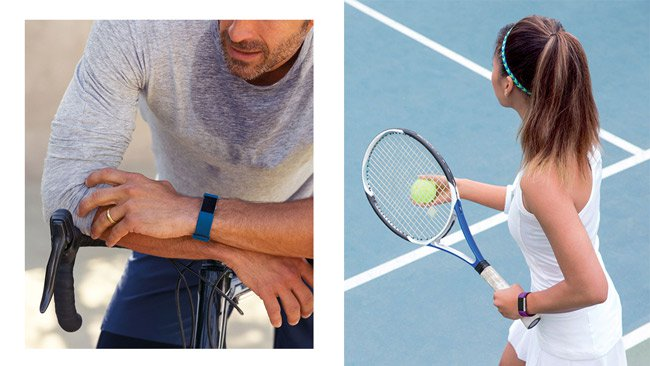
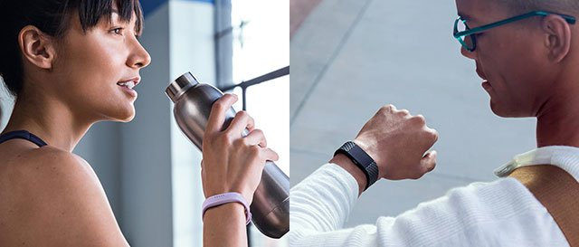

Nên chọn vòng đeo tay sức khỏe nào: Fitbit Flex 2 hay Fitbit Charge 2?
Fitbit là cái tên không còn xa lạ trên thị trường vòng tay sức khỏe của người dùng hiện nay. Nhằm đáp ứng tốt hơn nhu cầu chăm sóc sức khỏe của mọi người mới đây hãng Fitbit tiếp tục cho ra mắt thêm hai sản phẩm mới mang trong mình những cải tiến vượt trội đó chính là Fitbit Flex 2 và Fitbit Charge 2. Nếu bạn đang phân vân không biết nên chọn vòng tay sức khỏe nào trong hai loại trên thì hãy đọc ngay bài viết này, mình sẽ đặt chúng lên “bàn cân” và so sánh chi tiết về sự khác biệt để các bạn có cái nhìn rõ hơn về từng loại.
Trước hết nói về yếu tố thời trang, chúng ta đều có thể cảm nhận cả hai sản phẩm đều có thiết kế rất bắt mắt, nó sẽ là điểm nhấn cho bạn khi xuất hiện ở mọi lúc, mọi nơi giống như một món phụ kiện thời trang sành điệu. Sợi dây đeo của cả hai chiếc vòng đeo tay thông minh này đều được làm bằng cao su tự nhiên nên có độ dẻo cao và tạo sự thoải mái khi bạn khi đeo và vận động.
 Fitbit Flex 2 và Fitbit Charge 2- vòng tay sức khỏe thời trang.
Thoạt nhìn ta có thế thấy Fitbit Flex 2 có thiết kế tối giản hơn, chiếc vòng tay theo dõi sức khỏe này gây sự chú ý với người dùng ở thiết kế 5 đèn LED chỉ thị bằng sắc màu. Fitbit Flex 2 mang trên mình hầu hết những tính năng mà bất kỳ một người yêu thể thao và công nghệ nào cũng muốn sở hữu. Fitbit bảo đảm đây là chiếc vòng đeo tay thông minh đầu tiên được hãng thiết kế thích hợp nhất dành cho nhóm khách hàng yêu thích bơi lội. Cũng chính vì là một chiếc vòng tay cho những người yêu thích môn thể thao dưới nước nên lẽ đương nhiên Fitbit Flex 2 có khả năng chống nước cực kỳ tốt. Fitbit Flex 2 cũng có thể tính toán chính xác số vòng bơi của chủ nhân, đồng thời tự động nhận biết các bài tập.
 Bạn là người đam mê vận động thì không thể thiếu Fitbit Flex 2.
Thật là thiếu sót khi nói đến Fitbit Flex 2 lại không đề cập tới tính năng trông chừng mọi hoạt động thường ngày khác của chủ nhân như đếm bước chân, tính lượng calo đã tiêu thụ cho đến đo khoảng cách di chuyển. Điểm đáng chú ý, Fitbit Flex 2 không chỉ có tùy chọn màu sắc dây đeo mà còn có cả những món phụ kiện như dây đeo cổ, vòng đeo tay thời trang.
 Fitbit Flex 2 có 4 màu cho bạn lựa chọn.
Nói về Fitbit Charge 2, đập vào mắt chúng ta là một chiếc vòng đeo tay với màn hình lớn hơn, cung cấp nhiều không gian hiển thị hơn. Điểm cộng cho chiếc vòng đeo tay thông minh này chính là màn hình OLED hiển thị dữ liệu trắng đen, dễ theo dõi và thân thiện với người dùng. Bên cạnh đó, dây đeo và màn hình dễ dàng tách rời, thuận tiện thay đổi màu sắc và được thiết kế phù hợp với mọi môi trường hoạt động từ rèn luyện đến vui chơi, giải trí.
 Vòng tay sức khỏe Fitbit Charge 2 có màn hình lớn.
Tương tự như người anh em Fitbit Flex 2, Fitbit Charge 2 cũng trang bị cho mình những tính năng như hỗ trợ xây dựng bài tập rèn luyện cũng như chế độ ngủ, nghỉ phù hợp hơn cho sức khỏe của người dùng và có thể thể thông báo với chủ nhân của mình khi có tin nhắn, cuộc gọi đến hoặc nhắc nhở di chuyển nếu phát hiện người dùng ngồi quá lâu. Tuy nhiên, có thể nhận thấy rõ Fitbit Charge 2 vượt trội hơn hẳn Fitbit Flex 2 khi tích hợp công nghệ PurePulse để đo nhịp tim 24/7, ngoài ra thiết bị theo dõi sức khỏe này còn cung cấp thêm hướng dẫn hít thở sâu giúp người dùng thư giãn tinh thần.
 Fitbit Charge 2 phù hợp với mọi đối tượng yêu thích vận động.
Môt điểm khác biệt nữa bạn cần quan tâm đó là Fitbit Charge 2 chỉ kháng được mồ hôi, mưa nhỏ nên việc mang theo Fitbit Charge 2 để bơi lội giống như Fitbit Flex 2 là điều không thể.
 Hy vọng các bạn sẽ lựa chọn được chiếc vòng tay phù hợp.
Kết Luận:
Nhìn chung hai thiết bị theo dõi sức khỏe này của Fitbit đều thể hiện tốt vai trò của mình trong việc chăm sóc sức khỏe cho chủ nhân. Không thể phủ nhận Fitbit Flex 2 sẽ hấp dẫn hơn Fitbit Charge 2 đối với những người có ngân sách hạn hẹp. Do đó nếu bạn là một người yêu thể thao, đặc biệt là các môn thể thao dưới nước thì chắc chắn Fibit Flex sẽ là một lựa chọn hoàn hảo. Còn nếu việc chi phí không phải là vấn đề quá quan trọng với bạn thì chắc chắn Fitbit Charge 2 sẽ là một sản phẩm không làm phí đồng tiền mà bạn bỏ ra để có thể sở hữu được nó.
Bạn có thể tham khảo và mua vòng tay sức khỏe Fitbit Flex 2 tại META: https://meta.vn/vong-tay-theo-doi-suc-khoe-fitbit-flex-2-p48395
Hoặc mua vòng tay sức khỏe Fitbit Charge 2 tại: https://meta.vn/vong-tay-theo-doi-suc-khoe-fitbit-charge-2-p48608
Thứ Năm, 09/11/2017 15:09